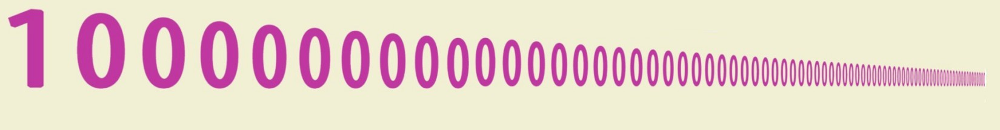
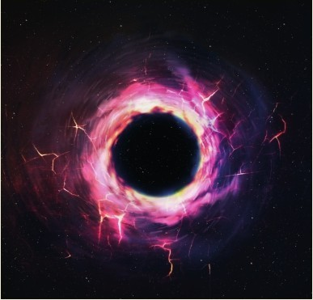

无穷大并不是一个数，那何为大数呢？数学上可以写出任意大的数而无须给其命名，但是1920年，一位9岁男孩为一个大数取了个响亮的名字。
受人类自身条件限制，我们理解大数是困难的。我们能很好地理解0到9这10个数，也能轻易地数到更大的数，如20多或30多，甚至更大的数，但人们大多并不乐意继续往下数，且在日常生活中，人们对大数的理解偏模糊，并不如之前提到的小数清晰。比如，人们常说“一些”“几打”或“约一百”这些词，其实都是估算，毕竟生活中这种估计就够使了，虽然在数学上这远远不够精确。不可否认，我们还是清楚具体数字的大小的。比方说，我们能迅速地为4个数2001、201、23 001和24按大小排序。但是，对大批量的事物，即使进行估计也是很困难的。我们称一堆物品“约1000”个，这其实并不是在做估计，而是非常粗的猜测。我们的大脑其实很难分辨眼前的事物是1000个还是5000个，抑或是10 000个，就如我们无法凭眼力估算出沙滩上的鹅卵石数量抑或是森林中的树木数量。

1古戈尔（googol）表示大数10100，即1后面跟100个零。
科学记数法
数学上用完全不同的方法处理大数。我们可以从庞大的事物中抽取样本作子集，计算子集的基数，用此基数乘以子集的个数就估算出整体的数量。再利用科学记数法，把难于书写的大数用乘方的形式表达（见第76页：乘方）。比如6万亿就可以不用写成6 000 000 000 000，而是6×1012，即6后面跟着12个零。
美国数学家爱德华·卡斯纳在自己的著作中引入了外甥命名的大数古戈尔，使这个大数为世人关注。
稍大一点的数
上面的12称为指数，即表示底数的12次方。10的13次方是其12次方的10倍。可见，统一成科学记数法，同底数情况下，我们可以通过比较指数的大小来比较乘方数的大小。不过还要注意其他因子，比如，1盎司钻石含有1.2×1024个原子，把这个数与1万亿（1×1012）作比较，钻石含有的原子数并不是如大众容易弄错的那样，约为1万亿的两倍，而是整整1.2万亿倍！
谷歌公司名字的由来
20世纪90年代中叶的一天，两位斯坦福大学数学专业的研究生谢尔盖·布林和拉里·佩奇正为给刚成立的网络公司起名发愁。一位朋友建议公司就命名为大数古戈尔（googol），但是，没想到的是，这位朋友把词拼写错了，写成了google。布林和佩奇觉得那就将错就错吧。于是，1998年9月4日，两人用Google的名字注册成立了一家公司，从而开启了网络搜索新时代。位于圣弗朗西斯科的公司总部被命名为Googleplex。
大数
Million 106
Billion 109
Trillion 1012
Quadrillion 1015
Quintillion 1018
Sextillion 1021
Octillion 1027
Nonillion 1030
Decillion 1033
Undecillion 1036
Duodecillion 1039
Tredecillion 1042
Quattuordecillion 1045
Quindecillion 1048
Sexdecillion 1051
Septendecillion 1054
Octodecillion 1057
Novemdecillion 1060
Vigintillion 1063
Centillion 10303
一个新命名的数
数学的神奇之处包括它能处理的数可以远远大于我们实际遇到的。这也是美国数学家爱德华·卡斯纳在考查了一些超大数之后大感兴趣的。这位数学家留世的发现之一得来其实纯属偶然。1920年，卡斯纳带着两个外甥在户外散步，边走边讨论与大数相关的话题。为了勾起两个小家伙的兴趣，卡斯纳让他们给1后面跟着100个零的大数命名。当时9岁的外甥米尔顿建议起名为“古戈尔（googol）”。
古戈尔次方
米尔顿（和卡斯纳）清楚1古戈尔并不是无穷大。所以，可以有更大的数，他们决定更大的数取名为古戈尔普勒克斯（googolplex）。两位小男孩建议1古戈尔普勒克斯就用来表示1后面跟着许多个零，多到累得实在没力气写完这么多个零。后来，卡斯纳定义1古戈尔普勒克斯为一个巨大的数：1后面跟着古戈尔个零。

黑洞是宇宙空间内存在的一种密度极大、体积极小的天体，科学家认为其寿命有1古戈尔年。目前宇宙才只有1.38×1010岁，因此黑洞其实还很年轻。
超脱自然
1古戈尔表示1×10100，一个我们几乎无法想象的数，比我们迄今为止讨论的数大上万亿个数量级。这个数过于巨大，很难与自然界的某种事物建立对应关系，以使我们增进对世界的了解。科学家估计宇宙中亚原子颗粒的数目大概是1080，而这个数相较于1古戈尔仍是相形见绌，不足一提。但是，如果有足够的耐心和足够大的草稿纸，人们还是能够把这个数完完全全写下来的。
有名字的最大数
1古戈尔普勒克新（googolplexian）等于10的古戈尔普勒克斯次方，也就是1后面跟着古戈尔普勒克斯多个零。这个大数是迄今有名字的数中最大的一个。那么，接下来，我们该如何命名10googolplexian呢？
超脱宇宙
1古戈尔普勒克斯表示为1×10googol，即1010100，也就是10的100次方作为指数， 10为底，得到的乘方数。1古戈尔是1后面跟着100个零，而1古戈尔普勒克斯后面跟的零实在太多，已经无法用语言简单描述。美国国家航空航天局著名科学家和科普作家卡尔·萨根概括说，如果能在一张纸上写下1古戈尔普勒克斯这个大数，那么，这张纸将大得无法存在于我们的可观测宇宙中。1立方米空间中所有可能的量子态总数也不到1古戈尔普勒克斯。事实上，1立方米（近乎一位成人身体的体积）空间里原子有101070种不同的排列方式。这意味着，如果一个人行进101070米，他必然遇见了1立方米空间中所有的微观粒子（或空旷的空间）。继续前行，他将重复看见遇见过的粒子。在他走完1古戈尔普勒克斯米之前，他将重复这种现象许多许多次。不过，萨根也提到：“1古戈尔和1古戈尔普勒克斯离无穷大仍然很远，亦如自然数1。”
这是目前1古戈尔普勒克斯最简洁的书写方式。另一种在1后面添上古戈尔个零的写法，简直无法想象。
参见：
▶乘方，第76页
▶对数，第98页
▶无穷大，第152页